무선설비산업기사 (2015-06-06 기출문제)
1과목: 디지털 전자회로
1. 다음 중 전원주파수 60[Hz]를 사용하는 정류회로에서 60[Hz]의 맥동주파수를 나타내는 회로 방식은?
- 3상 반파 정류
- 3상 전파 정류
- 단상 반파 정류
- 단상 전파 정류
(정답률: 83%)

2. 다음 그림과 같은 초크 입력형 평활회로에서 출력측의 맥동 함유율을 작게 하려고 할 때 적합한 방법은?
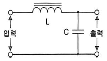
- L과 C를 모두 크게 한다.
- L과 C를 모두 적게 한다.
- L을 크게 C를 작게 한다.
- C를 크게 L을 작게 한다.
(정답률: 85%)
3. 다음 중 정류회로에서 출력전압 변동의 원인에 해당되지 않는 것은?
- 신호원 전압
- 부하 전류
- 주위 온도
- 트랜스 크기
(정답률: 75%)
4. FET에서 VGS=0.7[V]로 일정하게 유지하고 VDS를 6[V]에서 10[V]로 ID가 10[mA]에서 12[mA]로 변하였을 경우 드레인 저항(rd)은 얼마인가?(오류 신고가 접수된 문제입니다. 반드시 정답과 해설을 확인하시기 바랍니다.)
- 0.5[kΩ]
- 1.4[kΩ]
- 2[kΩ]
- 5[kΩ]
(정답률: 63%)
5. 궤환이 없을 때의 증폭도가 100인 증폭회로에 궤환율 -0.01의 궤환을 걸어주면 증폭도는 얼마인가?
- 5
- 50
- 500
- 5,000
(정답률: 67%)
6. 다음 중 차동 증폭 회로의 특징이 아닌 것은?
- 증폭도가 보통 방식보다 작다.
- 작은 온도 변화에도 동작이 안정하다.
- 교류증폭은 불가능하며, 직류만 증폭이 가능하다.
- 부품의 절대치가 변화해도 증폭이 거의 안정하며, 대역폭이 넓다.
(정답률: 44%)
7. 다음 중 C급 증폭기의 용도로 적합한 것은?
- 완충 증폭기
- Push-Pull 증폭기
- 저주파 증폭기
- RF전력 증폭기
(정답률: 71%)
8. 발진회로에서 안정적인 발진조건으로 옳은 것은? (단, A=증폭도, β=되먹임률)
- Aβ = 1
- Aβ < 0
- Aβ > 0
- Aβ≠ 1
(정답률: 88%)
9. 다음 중 LC 발진회로의 종류가 아닌 것은?
- 톱니파 발진기
- 하틀리 발진기
- 콜피츠 발진기
- 동조형 반결합 발진기
(정답률: 74%)
10. 아날로그 TV의 영상신호 전송에 사용되는 방식으로 한 쪽 측파대의 일부를 남겨 통신하는 방식은?
- VSB
- DSB
- SSB
- FSK
(정답률: 79%)
11. 십진수 673을 16진수로 바꾸면?
- 2B1
- 2A1
- 291
- 2C1
(정답률: 79%)
12. PCM 통신 방식에서 송신 과정으로 맞는 것은?
- 표본화 → 부호화 → 양자화 → 압축
- 표본화 → 양자화 → 부호화 → 압축
- 표본화 → 부호화 → 압축 → 부호화
- 표본화 → 압축 → 양자화 → 부호화
(정답률: 83%)
13. 다음 중 슈미트 트리거(Schimit Trigger) 회로의 출력에 나타나는 파형의 특성으로 옳은 것은?
- 백 스윙(Back-Swing) 현상
- 슈우트(Shoot) 현상
- 히스테리시스(Hysterisis) 현상
- 싱잉(Singing) 현상
(정답률: 81%)
14. 정(+)으로 바이어스 된 리미터 회로와 부(-)로 바이어스 된 리미터 회로를 결합하여 입력신호의일부분을 추출하는 회로는?
- 클리퍼(Clipper)
- 클램퍼(Clamper)
- 슬라이서(Slicer)
- 슈미트 트리거(Schmitt Trigger)
(정답률: 70%)
15. 두 개의 입력파형 A, B에 대하여 출력 파형 Y가 그림과 같을 때 어떤 게이트를 통과한 것인가?
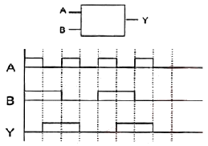
- OR
- NOR
- NAND
- XOR
(정답률: 76%)
16. 다음 J-K 플립플롭의 여기표(Excitation Table)의 각각의 괄호 안에 맞는 답은? (단, X는 Don't care를 의미하며, J-K 플립플롭의 이전 값은 초기화된 것으로 가정한다.)
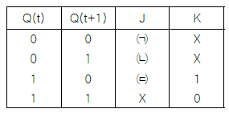
- ㈀ = 1, ㈁ = X, ㈂ = 0
- ㈀ = 0, ㈁ = X, ㈂ = 1
- ㈀ = 0, ㈁ = 1, ㈂ = X
- ㈀ = 1, ㈁ = 0, ㈂ = X
(정답률: 82%)
17. 다음 그림과 같은 D형 플립플롭으로 구성된 카운터 회로의 명칭은?
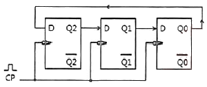
- 3진 링카운터
- 6진 링카운터
- 8진 시프트카운터
- 16진 시프트카운터
(정답률: 77%)
18. 다음 중 BCD 부호를 10진수로, 2진수를 8진수나 16진수로 변환하기 위해 사용되는 회로는?
- 디코더
- 인코더
- 멀티플렉서
- 디멀티플렉서
(정답률: 83%)
19. 난수 발생 회로에서 n비트의 레지스터를 사용할 경우 발생하는 난수는 몇 개인가?
- n-1개
- 2n-1개
- 2n+1개
- n+1개
(정답률: 84%)
20. 16[bit] 데이터 버스와 10[bit] 주소 버스를 갖고 있는 마이크로프로세서에 연결될 수 있는 최대 메모리 용량[byte]은?
- 1,024[byte]
- 2,048[byte]
- 4,096[byte]
- 8,192[byte]
(정답률: 73%)
2과목: 무선통신 기기
21. 다음 중 AM 수신기의 특성을 나타내는 중요 요소로써 적합하지 않은 것은?
- 감도
- 변조도
- 선택도
- 안정도
(정답률: 75%)
22. 정보신호의 진폭에 따라 반송파 신호의 주파수가 변화되는 변조 방식을 무엇이라 하는가?
- AM(Amplitude Modulation)
- SSB(Single Side Band)
- VSB(Vestigial Side Band)
- FM(Frequency Modulation)
(정답률: 73%)
23. 다음 중 무선수신기의 희망 수신 주파수에 근접한 강한 주파수가 존재할 경우 이를 줄이기 위한 대책으로 적합한 것은?
- 통과 대역폭이 좁은 BPF(Band Pass Filter)를 사용한다.
- 고주파 증폭기의 이득을 높인다.
- 고주파 증폭기의 통과 대역을 넓힌다.
- 중간주파 증폭기의 통과 대역을 넓힌다.
(정답률: 72%)
24. 다음 중 CDMA 방식을 FDMA 방식과 비교했을 때 장점이 아닌 것은?
- 비화성이 있어 보안에 강하다.
- 접속국의 수를 많이 할 수 있다.
- 송ㆍ수신기 구조가 간단하다.
- 전파의 간섭이나 혼신방해에 강하다.
(정답률: 81%)
25. 다음 중 방향 탐지기의 구성 요소가 아닌 것은?
- 안테나 장치
- 수신 장치
- 지시 장치
- 비콘 송신 장치
(정답률: 82%)
26. 다음 중 통신 위성체의 텔레메트리(Telemetry) 정보의 내용으로 적합하지 않은 것은?
- 위성추진시스템의 가스 압력 값
- 열제어 시스템에서의 온도감지의 출력 값
- 명령에 대한 데이터 확인
- 주파수 변환 값
(정답률: 70%)
27. 직경이 1~2.4[m]인 소형 안테나와 낮은 송신출력을 갖는 위성통신용 지상 장치로 주로 개인이나 기업 등에서 저속 데이터 통신망을 구축하는데 이용되는 초소형 지구국 시스템은?
- INMARSAT
- VSAT
- GPS
- INTELSAT
(정답률: 75%)
28. CDMA 시스템에서 대역폭이 1.25[MHz], 음성 데이터 속도가 4.8[kbps]일 때 이득(Gp)는 약 얼마인가?
- 260
- 295
- 335
- 390
(정답률: 52%)
29. 다음 중 LTE에 사용되는 MIMO(Multiple Input Multiple Output)에 대한 설명으로 옳지 않은 것은?
- Multiple Antenna 사용
- Transmit Diversity 사용으로 신호품질 향상
- Spatial Multiplexing 사용으로 주파수 효율향상
- CS Fallback 사용으로 데이터 용량증가
(정답률: 79%)
30. 기지국, 유선인터넷망, Gateway 및 O&M Server로 구성되며 Core 네트워크와의 연계를 통해 LTE 전화 및 무선데이터 통신을 제공하는 서비스기술은?
- 펨토셀
- WiFi
- WiMax
- GPS
(정답률: 88%)
31. 다음 중 축전지의 부동충전방식의 특징에 대한 설명으로 옳지 않은 것은?
- 축전지의 충방전 전기량이 적어 수명이 짧아진다.
- 이동용 무선설비의 전원으로 이용된다.
- 축전지의 용량이 비교적 적어도 된다.
- 부하에 대한 전압변동이 적고 직류출력 전압이 안정하다.
(정답률: 81%)
32. UPS 전원장치 방식 중 On-Line 방식은 부하전류의 몇 [%]를 인버터로부터 공급 받는가?
- 30[%]
- 60[%]
- 80[%]
- 100[%]
(정답률: 79%)
33. 다음 중 휴대단말기의 성능을 검증하기 위해 차량을 이용한 주행시험(Driving Test)을 진행할 경우 차량 시거잭(Cigar jack) 전원에 노트북 및 휴대전화 충전기를 연결하고자 한다. 이때 필요한 장치는 무엇인가?
- UPS(Uninterruptible Power Supply)
- 인버터(Inverter)
- AVR(Automatic Voltage Regulator)
- 정류기(Rectifier)
(정답률: 83%)
34. 전원회로에서 부하가 있을 때 단자전압이 110[V], 부하가 없을 때 단자전압이 120[V]라면 이 때의 전압 변동률은 약 얼마인가?
- 10.1[%]
- 9.1[%]
- 8.1[%]
- 7.1[%]
(정답률: 84%)
35. 다음 중 무선송신기에 대한 측정시험이 아닌 것은?
- 선택도
- 전력
- 왜율
- 대역폭
(정답률: 56%)
36. 다음 중 중파용 송신기의 주파수 변조 특성을 측정할 경우 사용하지 않아도 되는 측정 장비는?
- 레벨미터
- 표준 감쇠기
- 임피던스 브리지
- 가청 주파수 신호 발생기
(정답률: 57%)
37. 다음 문장의 괄호 안에 들어갈 내용으로 적합하지 않는 것은?
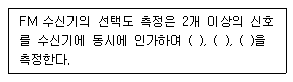
- 감도억압효과 특성
- 혼변조 특성
- 상호변조 특성
- 주파수 안정도 특성
(정답률: 82%)
38. 급전선의 종단을 개방했을 때의 입력측에서 본 임피던스를 Zf라 하고 종단을 단락했을 때의 임피던스를 Zs라고 할 때 특성임피던스 Z0는?
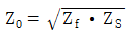
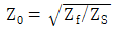
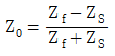
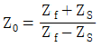
(정답률: 85%)
39. 직류 전압의 평균값이 220[V]이고, 출력 교류(리플) 전압의 실효값이 4[V]일 경우 맥동률은 약 몇 [%]인가?
- 1.4[%]
- 1.6[%]
- 1.8[%]
- 2.0[%]
(정답률: 73%)
40. 다음 중 페이딩에 대처하기 위한 방식이 아닌 것은?
- 다이버시티
- 주파수의 광대역화
- 다중 반송파
- 적응 등화기
(정답률: 64%)
3과목: 안테나 개론
41. 다음 중 전파의 전파속도에 영향을 미치는 요소로 맞는 것은?
- 유전율과 투자율
- 점도와 유전율
- 투자율과 도전율
- 유전율과 도전율
(정답률: 88%)
42. 주파수 150[kHz]로 발사하는 무선통신에서 정전계, 유도 전자계, 복사 전자계가 같아지는 거리는 안테나로부터 약 얼마의 거리인가?
- 320[m]
- 500[m]
- 680[m]
- 770[m]
(정답률: 73%)
43. 다음 중 전파의 성질에 대한 설명으로 옳은 것은?
- 균일 매질 중을 전파하는 전파는 회절한다.
- 전파는 종파이다.
- 주파수에 상관없이 회절만 한다.
- 주파수가 높을수록 직진하며 낮을수록 회절한다.
(정답률: 80%)
44. 다음 중 송신기에서 급전선으로 신호를 전송할 때 정재파비가 1인 경우에 대한 설명으로 틀린 것은?
- 급전선의 고유임피던스로 종단되고 있다.
- 급전선이 완전히 정합된 것을 의미한다.
- 반사계수의 값이 1이다.
- 손실이 없음을 의미한다.
(정답률: 63%)
45. 다음 중 급전선의 필요조건으로 적합하지 않은 것은?
- 송신용일 경우 절연 내력이 좋아야 한다.
- 급전선의 파동임피던스가 적당해야 한다.
- 전송 효율이 좋아야 한다.
- 선의 굵기가 커서 전기저항이 적어야 한다.
(정답률: 81%)
46. 특성임피던스가 50[Ω]인 전송선로에 75[Ω] 부하를 접속하였을 때 반사계수는 얼마인가?
- 0.1
- 0.2
- 0.3
- 0.4
(정답률: 74%)
47. 급전선의 반사계수(Γ)가 0.5일 경우 최대전압이 66[V]라면, 최소 전압[V]은 얼마인가?
- 132[V]
- 33[V]
- 22[V]
- 11[V]
(정답률: 72%)
48. 다음 중 마이크로파 대 주파수의 전송 선로로 도파관을 사용하는 이유가 아닌 것은?
- 대전력용으로 사용된다.
- 외부 전자계와 완전히 결합된다.
- 방사손실이 적다.
- 유전체 손실이 적다.
(정답률: 78%)
49. 접지 안테나에서 손실의 대부분을 차지하는 것은?
- 도체 저항에 의한 손실
- 유전체 저항에 의한 손실
- 코로나 저항에 의한 손실
- 접지 저항에 의한 손실
(정답률: 76%)
50. 다음 중 안테나의 공진주파수를 낮추기 위한 방법으로 적합한 것은?
- 안테나에 직렬로 인덕터를 연결한다.
- 안테나에 직렬로 커패시터를 연결한다.
- 안테나에 직렬로 저항을 연결한다.
- 안테나에 직렬로 저항과 커패시터를 연결한다.
(정답률: 70%)
51. 다음 중 루프 안테나에 대한 설명으로 틀린 것은?
- 실효길이는 권수(감이수)에 비례하고, 파장에 반비례한다.
- 전파도래 방향과 루프면이 일치할 때 최대 감도를 갖는다.
- 루프 안테나는 중장파용 안테나이다.
- 루프 지름과 파장 사이의 관계에 따라서 지향성 특성이 변한다.
(정답률: 47%)
52. 다음 안테나 중 반사기가 있는 안테나는?
- 대수 주기 안테나
- 어골형(Fish bone) 안테나
- 싱글 턴스타일(Single turnstile) 안테나
- 야기(Yagi) 안테나
(정답률: 80%)
53. 다음 중 폴디드(Folded) 다이폴 안테나에 대한 설명으로 틀린 것은?
- Q가 높아서 협대역 특성을 갖는다.
- 실효길이는 반파장 다이폴 안테나의 약 2배이다.
- 전계강도, 이득, 지향성은 반파장 다이폴 안테나와 동일하다.
- 반파장 다이폴 안테나에 비해서 도체의 유효 단면적이 크고 복사저항이 크다.
(정답률: 61%)
54. 다음 중 대지의 도전율이 좋아 가상접지를 사용하지 않아도 되는 지역은?
- 건조지
- 바위산
- 수분이 많은 토지
- 건물의 옥상
(정답률: 87%)
55. 다음 중 초단파의 전파 특성에 대한 설명으로 틀린 것은?
- 초단파대 이상의 주파수대는 주로 지표파가 주성분이다.
- 직접파와 대지 반사파에 의해서 수신 전계가 대략 정해진다.
- 지상에서 직접파는 기하학적인 가시거리보다 약간 멀리 전달된다.
- 태양의 활동에 따르는 수신 강도의 변화는 단파보다 영향이 적다.
(정답률: 44%)
56. 다음 중 지표파의 특성에 대한 설명으로 옳지 않은 것은?
- 주파수가 높을수록 전파의 감쇠는 크다.
- 안테나의 지상고가 높을수록 지표파 성분이 적다.
- 수평편파가 수직편파보다 감쇠가 많다.
- 대지의 도전율과 유전율에 영향을 받지 않는다.
(정답률: 80%)
57. 일반적으로 전리층 통신에서의 최적사용주파수(FOT)는 최고사용주파수(MUF)의 몇 [%]인가?
- 60[%]
- 75[%]
- 85[%]
- 95[%]
(정답률: 81%)
58. 다음 중 전리층에 전파가 입사할 때 받는 현상이 아닌 것은?
- 진로의 완곡
- 델린저 현상
- 감쇠(흡수)
- 편파면의 회전
(정답률: 51%)
59. 다음 중 페이딩에 대한 설명으로 틀린 것은?
- 공간파와 지표파의 간섭에 의해서 생긴다.
- 주기가 느리고 규칙적으로 나타난다.
- 전파의 세기가 크게 변동된다.
- 단파 통신에 많이 나타난다.
(정답률: 78%)
60. 다음 중 전파 잡음방해를 경감시키는 방안으로 적합하지 않은 것은?
- 수신전력을 크게 한다.
- 적절한 통신방식을 선택한다.
- 수신기를 완전히 차폐시킨다.
- 수신기의 실효대역폭을 넓힌다.
(정답률: 70%)
4과목: 전자계산기 일반 및 무선설비기준
61. 다음 중 중앙처리장치(CPU)의 기능이 아닌 것은?
- 산술 연산과 논리 연산을 함께 담당한다.
- 자료의 입출력을 제어하는 역할을 수행한다.
- 주기억 장치에 기억되어 있는 프로그램 명령어를 호출하여 해독한다.
- 연산의 실행을 위해 보조 기억 장치에서 데이터를 직접 출력 장치로 보낸다.
(정답률: 68%)
62. 다음 중 출력장치와 메모리 사이의 데이터 전송시, 가장 빠른 방식은?
- 프로그램 I/O 방식
- 인터럽트 I/O 방식
- 시리얼 I/O 방식
- DMA(Direct Memory Access) 방식
(정답률: 85%)
63. 8진수 3456.71을 2진수로 변환한 표현으로 옳은 것은?
- 011101101110.111001
- 011100101110.111001
- 011100111110.111001
- 011101010111.100111
(정답률: 74%)
64. 다음 중 주기억장치를 구성하고 있는 기억소자의 기능이 아닌 것은?
- 읽기 기능
- 쓰기 기능
- 삭제 기능
- 칩 선택 기능
(정답률: 67%)
65. 다음 중 다중-사용자 또는 다중-작업시스템에서 주기억장치의 관리를 위하여 운영체제가 하는 일이 아닌 것은?
- 각 프로세서에게 주기억장치를 얼마나 할당할 것인가를 결정
- 주기억장치 용량이 부족할 때 주기억장치에 적재되어 있는 현재 사용 중인 부분을 선택하여 보조기억장치에 옮겨 놓는 일
- 주기억장치의 빈 공간이 어디에 얼마나 있는지를 기록, 유지하는 일
- 각 프로세서가 자신에게 할당된 영역이 아닌 다른 부분을 접근할 때 이를 보호하는 일
(정답률: 66%)
66. 다음 중 데드락(Deadlock)을 발생시키는 원인이 아닌 것은?
- 점유와 대기(Hold and Wait)
- 순환 대기(Circular Wait)
- 상호 배제(Mutual Exclusion)
- 선점(Preemption)
(정답률: 81%)
67. 다음 중 임베디드 소프트웨어의 일반적인 특징이 아닌 것은?
- 실시간 처리
- 제한된 자원의 효율적 사용
- 높은 신뢰성
- 광범위한 범용성
(정답률: 62%)
68. 다음 보기의 전산시스템 개발 단계를 순서대로 나열한 것은?
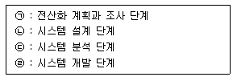
- ㉠-㉡-㉢-㉣
- ㉠-㉢-㉡-㉣
- ㉢-㉠-㉡-㉣
- ㉢-㉡-㉠-㉣
(정답률: 76%)
69. 마이크로컨트롤러의 주변 장치들을 제어하거나 주변 장치의 상태를 읽기 위해 할당된 특수 목적 레지스터는?
- 누산기(Accumulator)
- PC(Point Counter)
- DR(Data Register)
- SFR(Special Function Register)
(정답률: 72%)
70. 다음 중 인터럽트 우선순위 방식이 아닌 것은?
- Subroutine Call
- Polling
- Proority Encoder
- Daisy Chain
(정답률: 53%)
71. 다음 중 무선국의 개설허가에서 미래창조과학부장관의 심사사항에 해당되지 않는 것은?
- 주파수지정이 가능한지의 여부
- 설치운용 할 무선설비가 기술기준에 적합한지의 여부
- 무선종사자의 배치계획이 자격ㆍ정원배치 기준에 적합한지의 여부
- 안테나 설치 장소가 기준에 적합한지의 여부
(정답률: 57%)
72. 다음 중 전파법에서 규정한 “심사에 의한 주파수할당”시 고려할 사항이 아닌 것은?
- 전파자원 이용의 효율성
- 신청자의 주파수 이용 실적
- 신청자의 기술적 능력
- 할당하려는 주파수의 특성
(정답률: 75%)
73. 다음 중 무선국 개설허가의 유효 기간으로 틀린 것은?
- 기지국 : 5년
- 실험국 : 1년
- 공동체라디오방송국 : 3년
- 비상국 : 3년
(정답률: 73%)
74. 다음 중 ‘적합성평가를 받은 자에 대한 행정처분기준’에서 1차 위반시 ‘시정명령’인 위반사항은?
- 거짓이나 그 밖의 부정한 방법으로 적합성평가를 받은 경우
- 적합성평가표시를 거짓으로 표시한 경우
- 적합성평가표시를 하지 않은 경우
- 적합성평가의 변경신고 개선명령의 조치명령을 이행하지 않은 경우
(정답률: 67%)
75. 다음 중 국립전파연구원장의 지정시험기관 검사시 확인 사항으로 틀린 것은?
- 조직 및 인력 현황
- 비교숙련도 시험 참여 실적 및 시정조치 결과
- 시험환경 및 시험시설의 적합성 유지 여부
- 관리규정 및 시험수수료
(정답률: 77%)
76. 지정시험기관 업무를 휴지 또는 폐지하고자 하는 때에는 신고서를 예정일로부터 몇 일 이내에 제출해야 하는가?
- 30일
- 35일
- 40일
- 45일
(정답률: 87%)
77. 변조신호에 따라 반송파가 진폭 변조되는 송신장치는 변조도가 몇 [%]를 초과하지 말아야 하는가?
- 80[%]
- 85[%]
- 90[%]
- 100[%]
(정답률: 83%)
78. 무선설비규칙에서 규정한 p[kHz] ~ 535[kHz] 범위의 주파수를 사용하는 방송국의 주파수 허용 편차는 얼마인가?
- 10[Hz]
- 20[Hz]
- 40[Hz]
- 50[hz]
(정답률: 57%)
79. 다음 문장의 괄호 안에 들어갈 알맞은 것은?
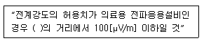
- 100[m]
- 80[m]
- 50[m]
- 30[m]
(정답률: 61%)
80. 다음 중 무선설비 설계업무 수행절차의 수행업무 내용으로 잘못 설명된 것은?
- 착수단계의 활동내용은 설계목적과 목표, 추진방안, 설계개요 및 법령 등 각종 기준을 검토한다.
- 준비단계의 활동내용은 예비타당성조사, 타당성조사 및 기본계획 결과의 검토를 행한다.
- 설계단계는 기본설계와 실시설계로 분류하며, 실시설계 활동내용으로 기본적인 구조물 형식의 비교ㆍ검토, 개략공사비 및 기본공정표를 작성한다.
- 설계심의단계의 활동은 설계목적 적합성 여부 심의, 자문단의 의견수렴 및 반영을 행한다.
(정답률: 75%)